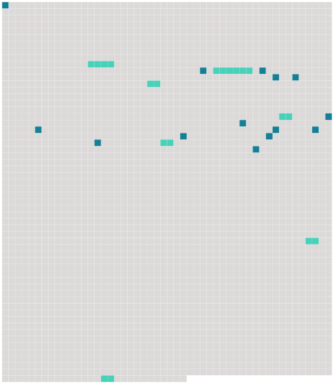

Longueur nb maillons : 21 mentions |
|
[Qui] demandait à être reçu dans cette auberge de la famine, dans cette cour plénière du Carême, dans cet hôtel de misère et de lésine? [12 phrases]
— L'hospitalité pour [moi et mes camarades] , des princes et des princesses, des Léandres et des Isabelles, des docteurs et des capitaines qui se promènent de bourgs en villes sur le chariot de Thespis, lequel chariot, traîné par des bœufs à la manière antique, est maintenant embourbé à quelques pas de votre château.
— Si je comprends bien ce que vous dites, [vous] êtes [des comédiens de province en tournée] et [vous] avez dévié du droit chemin? [2 phrases] — Quoique ma demeure soit assez délabrée et que je n'aie pas grand'chose à [vous] offrir, [vous] y serez toujours un peu moins mal qu'en plein air par une pluie battante.
» [8 phrases]
[Les comédiens] , bien qu'habitués par [leur] vie errante aux gîtes les plus divers, regardaient avec étonnement cet étrange logis que les hommes semblaient avoir abandonné depuis longtemps aux esprits et qui faisait naître involontairement des idées d'histoires tragiques ; pourtant [ils] n'en témoignaient, en personnes bien élevées, ni terreur ni surprise. « Je ne puis [vous] donner que le couvert, dit le jeune Baron, mon garde-manger ne renferme pas de quoi faire souper une souris.
Je vis seul en ce manoir, ne recevant jamais personne, et [vous] voyez, sans que je [vous] le dise, que la fortune n'habite pas céans. — Qu'à cela ne tienne, répliqua le Pédant ; si, au théâtre, l'on [nous] sert des poulets de carton et des bouteilles de bois tourné, [nous] nous précautionnons, pour la vie ordinaire, de mets plus substantiels.
Ces viandes creuses et ces boissons imaginaires iraient mal à [nos] estomacs, et, en qualité de munitionnaire de [la troupe] , je tiens toujours en réserve quelque jambon de Bayonne, quelque pâté de venaison, quelque longe de veau de Rivière, avec une douzaine de flacons de vin de Cahors et de Bordeaux. — Bien parlé, Pédant, exclama le Léandre ; va chercher les provisions, et, si ce seigneur le permet et daigne souper avec [nous] , dressons ici même la table du festin. [20 phrases] Le jeune maître du château put alors étudier tout à son aise les physionomies de [ses hôtes] vivement éclairées et ressortant avec un plein relief. [23 phrases] Dame Léonarde, la mère noble de [la troupe] , était vêtue tout de noir comme une duègne espagnole. |
 |
Il est possible de télécharger la ressource sur la page Ortolang |
Si vous avez des questions ou vous voyez des erreurs, merci d'envoyer un mail à silvia.federzoni89@gmail.com |